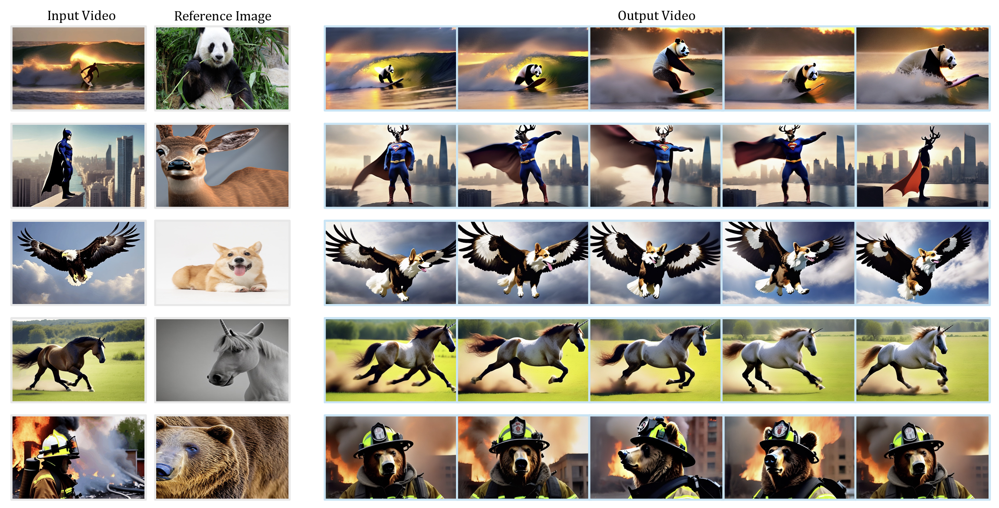
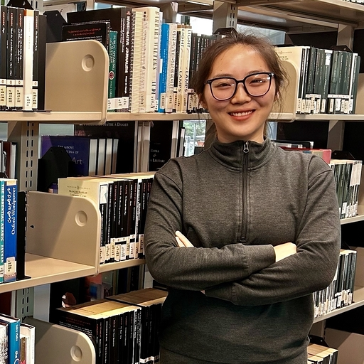
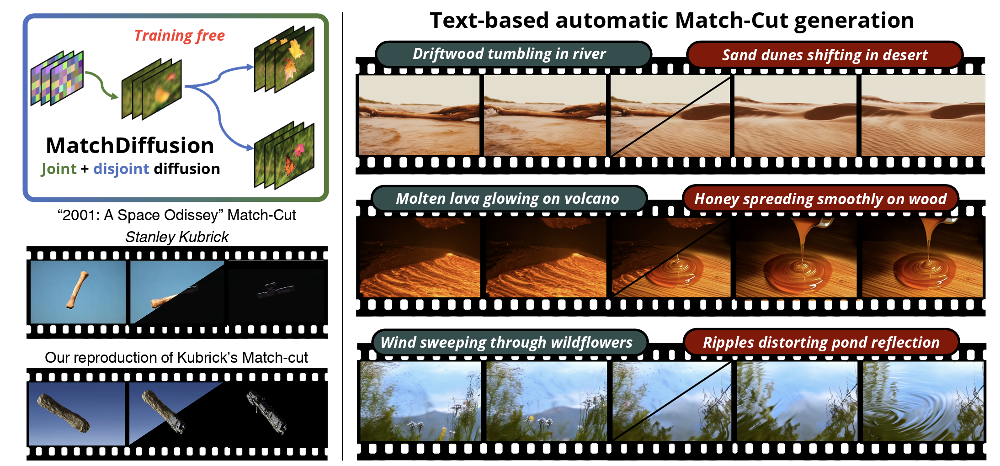
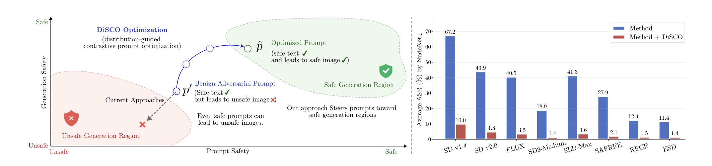
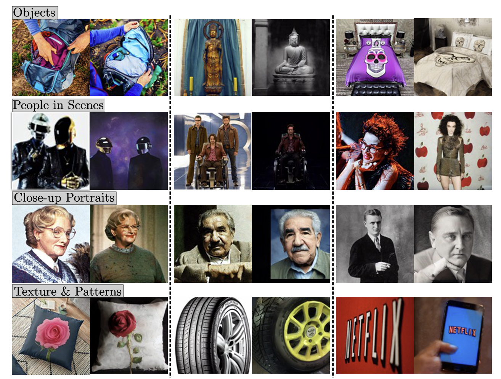

Tong Zhang
PhD Student · Computer Science · KAUST
I study generative AI safety, text-to-image diffusion, video generation and editing, multimodal learning, and continual learning.
Publications & Research


DiSCO: Defending text-to-image generation through distribution-guided contrastive prompt optimization
A training-free, model- and architecture-agnostic safeguard using distribution-guided contrastive prompt optimization. Reduced average attack success rate from 23.6% to 2.4% (NudeNet) across the evaluated settings, while maintaining or improving generation quality.

CAPTAIN: SEMANTIC FEATURE INJECTION FOR MEMORIZATION MITIGATION IN TEXT-TO-IMAGE DIFFUSION MODELS
A training-free inference-time framework that combines frequency-aware initialization with spatially and temporally localized semantic feature injection to reduce memorization. Reduced SSCD copy-detection similarity from 0.40 to 0.25 versus BE-Global on Stable Diffusion v1.4 while preserving prompt fidelity.
CoLaP: Continual Multimodal Prompt Learning
Continual adaptation of frozen vision backbones through semantic clustering of VLM-generated captions, contrastive alignment, and teacher-student distillation, retaining image-only inference. Improved ImageNet-O accuracy from 63.24% to 68.50% over L2P, with evaluation across five out-of-domain benchmarks.
Experience
Qualcomm Mentorship Programme
Generative AI safety research through a year-long mentorship collaboration, including DiSCO. Ongoing work investigates diffusion-based red teaming and defense through joint and disjoint trajectory analysis, using early denoising signals to detect malicious intent, adversarial edits, and concealed malicious patches.
Software Developer · CAMEL-AI
Co-developed and deployed task-driven LLM multi-agent workflows with task planning, expert role assignment, role-playing dialogue, and shared environment context. Designed dependency-aware task decomposition and expert coordination, and improved memory and context handling through structured insight extraction.
Education
King Abdullah University of Science and Technology
PhD Student · June 2025 - Present · Saudi Arabia
MS, Computer Science (with Thesis) · September 2023 - June 2025
Master's research focused on diffusion-based video generation and editing, including MatchDiffusion and MoCA-Video.
Southern University of Science and Technology
Final-year project: rubric-guided LLM report grading, comparing zero-shot and few-shot prompting against human scores.
Academic Service & Teaching
- Reviewer, BeNTO Workshop, NeurIPS 2026
- Teaching Assistant, Deep Learning in Visual Computing (CSC323), Spring 2026
- Workshop Organizer, CVPR Workshop on Computer Vision for the Environment (CVEU), 2025
Technical Skills
Languages: Python (primary), C/C++, SQL, R, Bash, LaTeX
ML / AI: PyTorch, Hugging Face, Diffusers, LoRA, GRPO, distributed training, prompt optimization
Tools: Git, Docker, Linux, Weights & Biases, pandas, NumPy, scikit-learn